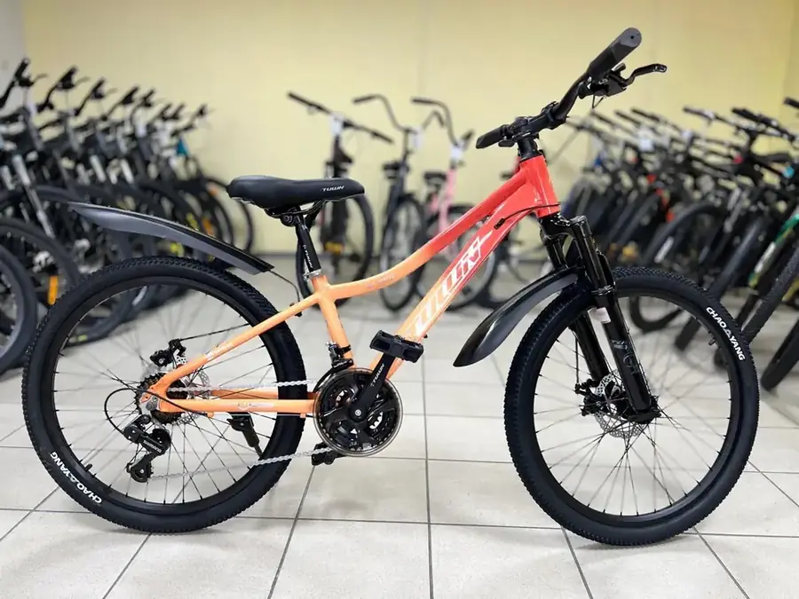

Подростковый велосипед · Очень лёгкий
TULUN 24 лёгкий алюминий
18 000 ₽
Очень лёгкий подростковый велосипед с регулируемой амортизацией.
✓ 24”✓ Алюминиевая рама✓ 21 скорость✓ Дисковые тормоза✓ Регулировка амортизации
Перед выдачей бесплатно:
сборка велосипеда, настройка тормозов и переключателей, проверка основных узлов. При покупке — подарок от магазина.
сборка велосипеда, настройка тормозов и переключателей, проверка основных узлов. При покупке — подарок от магазина.
Гарантия
Настройка перед выдачей
Помощь с подбором